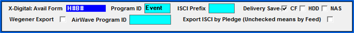
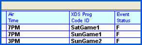

Sports Vehicle Event Setup
For ISCI avail form Sports vehicles that are configured for an X-Digital dual head end and that will also be sending station and agreement information to X-Digital as part of the X-Digital export process, follow these rules:
- Game vehicles are excluded from the vehicle/program export
- Game vehicle agreements will include the Program Number field (from the XDS Program Code ID on the event schedule screen)
- The program number field will also be included on the Spot Insertions export for game vehicles
If using the HB/HBP avail form, In the Vehicle>Options>Interface tab:
- Choose the Avail Form H#B# or H#B#P
- Enter “Event” in the Program ID field
- Note: If the Program ID is defined as ‘xx’, ‘xxx’ or ‘xxxx’, the agreement information for these events will not be transmitted to X-Digital

If using the ISCI avail form, the “Engineering Feed – ASP” checkbox must be checked on in Vehicles -> Options -> Exports to enable the XDS Program Code ID field.
- Go to the Programming Screen, select the Sport Event Vehicle
- Select ‘Define Schedule’
- Enter the XDS Program Code ID number for each event and Save the ID’s
- Using this feature, the XDS Program ID exported via the X-Digital export will use the Program Code ID defined on the Programming screen, allowing each event to have the appropriate Program code.

In addition, when generating the X-Digital Export for a Sports vehicle using the Program ID by Event feature (by Break avail form), the system will automatically offset the start time and date by one hour and the end time and date by 5 hours to ensure that the spots that air outside of the original sport times will still be carried within the Sport event should the event start early or run late.
- Example 1: Sport Event airing on 6/1 starts at 1pm and ends at 4p. The system will automatically set the start date and time to 6/1 at 12pm and set end date and time to 6/1 at 9p
- Example 2: Sport Event airing on 6/1 starts at 6pm and ends at 9p. The system will automatically set the start date and time to 6/1 at 5pm and set the end date and time to 6/2 at 2am
Agreements for non-game vehicles indicate whether they are inactive or active in the status field (inactive agreements are agreements that have been terminated and that have an off air or drop dead date (whichever is earlier) between yesterday and 2 weeks before yesterday).